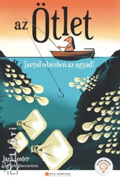
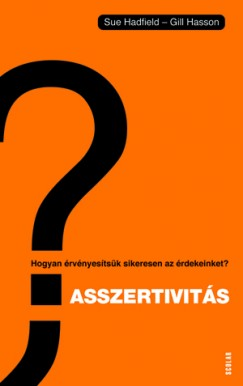

Minden pillanatban szükségünk van ötletekre. Néha kisebbekre, máskor igazi nagy gondolatokra. Azért, hogy ez ne okozzon gondolt még a legreménytelenebbnek látszó helyzetben sem, Jack Foster tíz egyszerű technikát javasol. Ezek segítségével szinte maguktól jönnek majd az ötletek! Ha pedig nagyobb kihívással kell megbirkóznunk, sikerrel alkalmazhatjuk az ötlépcsős módszert!
Miért van szükség problémákra? Mit tehetsz, ha senki nem dicsér? Miért viselkednek a szülők olyan őrülten? Hogyan válik valaki drogfüggővé? Mit tehetsz a mini zsarnokok ellen? Miért add a legjobb formámat? Miért van szükség célokra? Olvasd el, és megtudod. Viccesebb, mint egy pszichológus ;)
Bármikor belenézhetsz a tükörbe, azt mondva: "Na, ez nem tetszik magamban", és elhagyhatod egy rossz szokásodat egy jóért. Persze, nem mindig könnyű, de mindig lehetséges. A könyvben található rengeteg ötlet közül néhány szokás gyakorlása is olyan változást hozhat az életedben, amelyről sosem hitted volna, hogy lehetséges. Próbáld ki a fejezetek végén lévő apró lépteket, hogy rögtön tesztelhesd a szokásokat a gyakorlatban.
Bármilyen kedvezőtlenek is MOST a körülményeid, a dolgok állását öt év alatt képes vagy 180 fokban megfordítani. Annyi kell csak hozzá, hogy vedd kézbe a dolgok irányítását. Ez a könyv azt tanítja meg Neked, HOGYAN tedd meg mindezt. Ha megtanulod és alkalmazod az itt leírtakat, a következő öt év alatt el fogod érni álmaid és céljaid jelentős részét!

Az asszertivitás azt jelenti, hogy magabiztos és egyenes közlésmóddal tudatjuk másokkal, mit szeretnénk, és mit nem szeretnénk. Asszertív személyiségként nyugodt hangnemben ki tudod fejezni, mire van szükséged, mit tudsz elfogadni, és mit nem, valamint hogy milyen bánásmódot igényelsz. Meg akarod tanulni?
Ez a könyv lerombolja a mítoszt, miszerint a magas jövedelem az egyetlen út a gazdagsághoz; megmutatja, miért nem várhatjuk az iskolarendszertől, hogy megtanítsa a gyerekeket bánni a pénzzel; elmondja, mit tanítsunk meg gyermekeinknek a pénzről, hogy jobban érvényesüljenek az életben, mint mi.